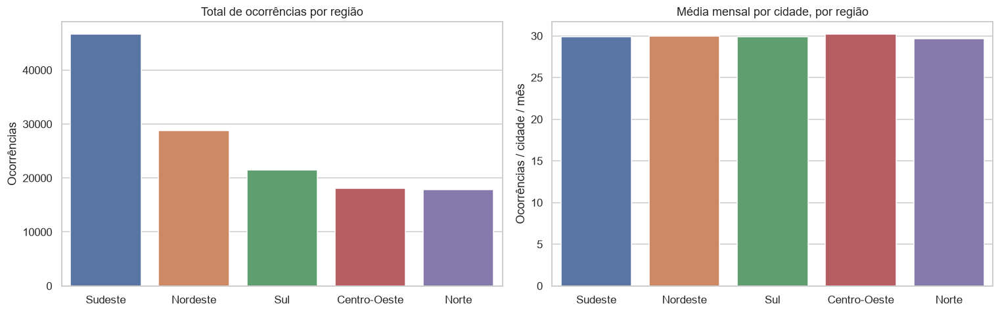
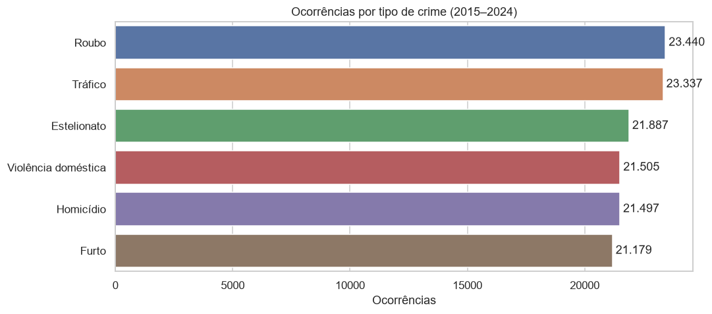
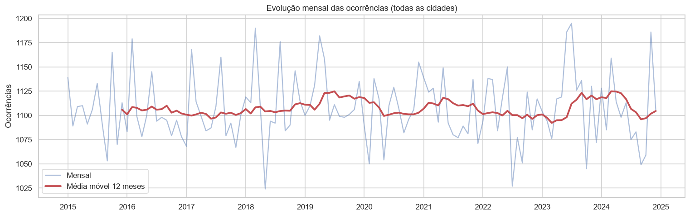
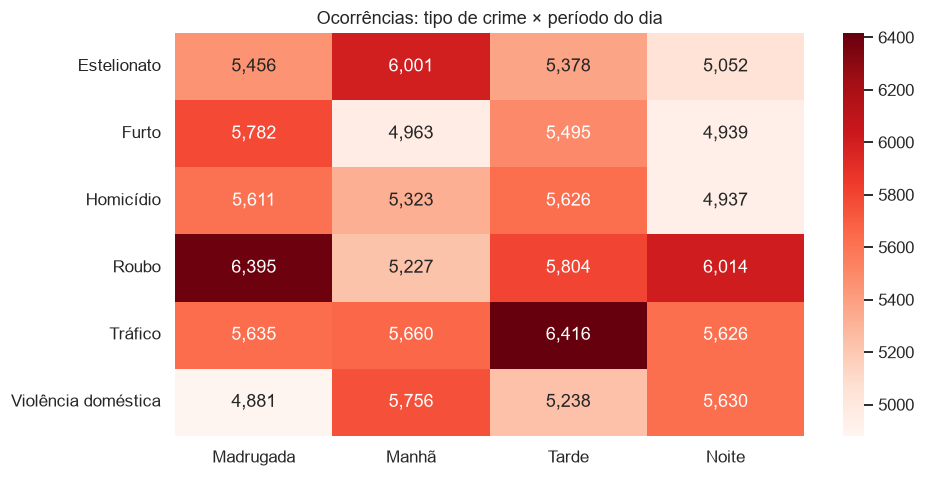
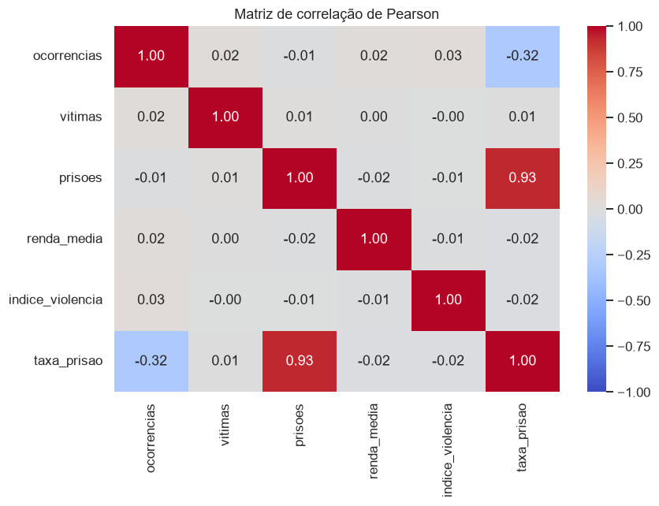
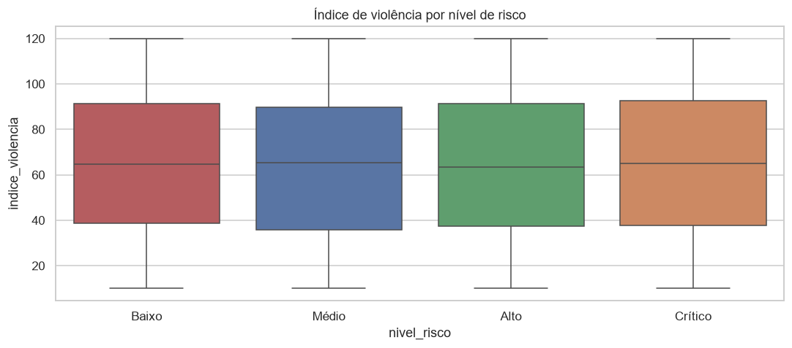

Sobre o projeto
Este projeto analisa 4.440 registros mensais de ocorrências criminais em 37 grandes cidades de 20 estados e das 5 regiões do Brasil, entre 2015 e 2024. O fluxo completo cobre leitura e tratamento da base, engenharia de atributos, persistência em banco relacional SQLite, análise exploratória com KPIs e gráficos e, por fim, um dashboard interativo publicado na web. A base é simulada, para fins didáticos.
Perguntas de negócio
- Quais regiões, estados e cidades concentram mais ocorrências?
- Quais tipos de crime são mais frequentes e quais geram mais vítimas?
- Há diferença entre períodos do dia e tipos de bairro?
- Como a criminalidade evoluiu entre 2015 e 2024? Existe sazonalidade?
- Renda média e índice de violência têm relação com o volume de crimes?
- Qual a eficiência policial, medida pela taxa de prisões por ocorrência?
Indicadores analisados
Principais resultados
- Distribuição homogênea: o Sudeste lidera em volume (~35%) por ter mais cidades na amostra, mas a média por cidade/mês é ~30 em todas as regiões.
- Roubo e Tráfico são os crimes mais frequentes; Roubo se concentra na madrugada e Tráfico à tarde.
- Série estável entre 2015 e 2024, sem tendência ou sazonalidade relevante.
- Taxa de prisão baixa (~10%): cerca de uma prisão a cada dez ocorrências.
- Correlações próximas de zero entre renda, índice de violência e ocorrências; o nível de risco é inconsistente com o índice de violência.






Tecnologias utilizadas
Funcionalidades avançadas: persistência em banco (SQLAlchemy + SQLite), modelagem relacional
(cidades ⟷ ocorrencias), mapa interativo (Plotly), correlação estatística (Pearson/Spearman)
e séries temporais com média móvel.
Arquivos do projeto
Código-fonte, notebook de análise e base de dados disponíveis no repositório:
Dashboard interativo
O dashboard em Streamlit permite filtrar por período, região, UF, cidade, tipo de crime, período do dia, bairro e nível de risco, com KPIs dinâmicos, gráficos interativos, mapa, matriz de correlação, tabelas e conclusão executiva.
Objetivo pedagógico
Demonstrar o ciclo completo de um projeto de dados — da base bruta à publicação online — aplicando as bibliotecas estudadas na disciplina e transformando dados em informação para apoiar decisões em segurança pública.